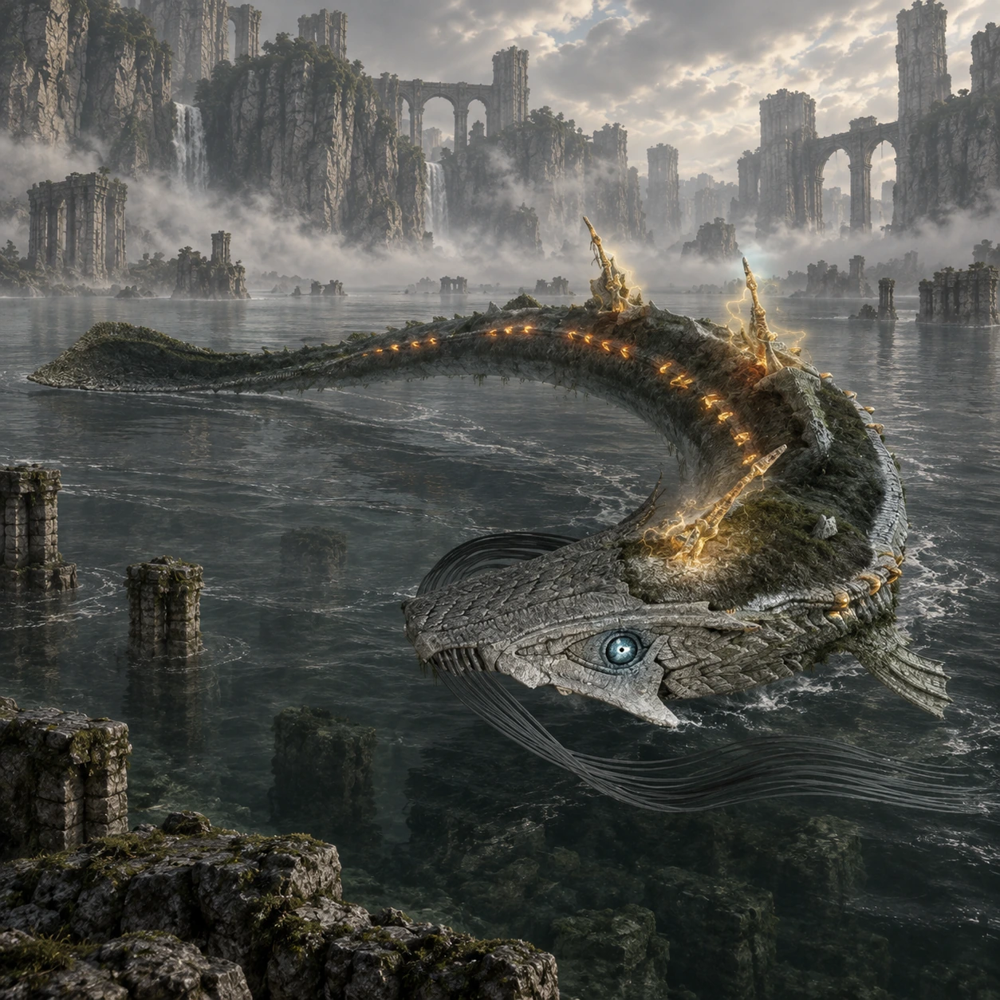

Dois nomes, duas origens
“Eel” é um nome de desenvolvimento. “Hydrus” é o nome popular entre os fãs, não um nome próprio apresentado durante o jogo.

Colosso 07 · Terras Proibidas
Luzes se movem nas profundezas.
Sob a superfície escura, Hydrus desenha curvas lentas com o corpo. As luzes de seus espinhos revelam a presença do gigante antes que ele se aproxime.
Conheça o gigante01 / O gigante
Hydrus tem corpo alongado, cauda flexível e espinhos luminosos ao longo do dorso. Sua forma lembra uma enguia que atravessa a água entre restos de estruturas antigas.
Boa parte de sua escala permanece escondida. O encontro alterna momentos de espera na superfície e breves aproximações, quando é possível perceber o tamanho do animal.
*A medida indicada segue a estimativa da comunidade citada nas fontes. Os tamanhos variam entre fontes e escalas; esta é uma referência aproximada de comprimento, não uma medida oficial confirmada.
02 / O caminho
Siga para o norte e depois para oeste, contornando as montanhas em direção ao extremo noroeste do mapa.
O destino é um lago profundo com ruínas e uma estrutura em espiral. Deixe Agro na margem e avance até a água para observar o movimento sob a superfície.
Abrir mapa das Terras Proibidas03 / Um olhar mais atento
“Eel” é um nome de desenvolvimento. “Hydrus” é o nome popular entre os fãs, não um nome próprio apresentado durante o jogo.
Os espinhos ajudam a acompanhar o colosso mesmo quando seu corpo está submerso.
Os restos de uma ponte atravessam parte do cenário, reforçando a sensação de um lugar que perdeu sua antiga função.
04 / O encontro
Algumas pistas para começar, deixando a descoberta da luta com você.
Dicas gerais para o modo Normal. A ficha não detalha todos os pontos vitais nem o desfecho do confronto.
Ficha baseada em registros da comunidade e guias de jogo. A arte é uma interpretação visual, não uma captura do jogo.